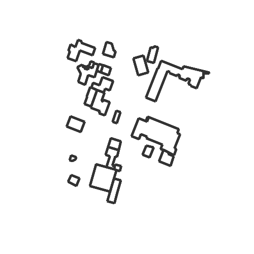

Loading an outdoor layout from its address¶
Out:
Servon_sur_Vilaine.ini
from pylayers.gis.layout import *
# Load the layout from open street map
L = Layout('Servon sur Vilaine',dist_m=50)
# Show the layout
L.showG('s')
plt.show()
Total running time of the script: (0 minutes 11.439 seconds)
Download Python source code:
plot_exLayout1.py
Download IPython notebook:
plot_exLayout1.ipynb